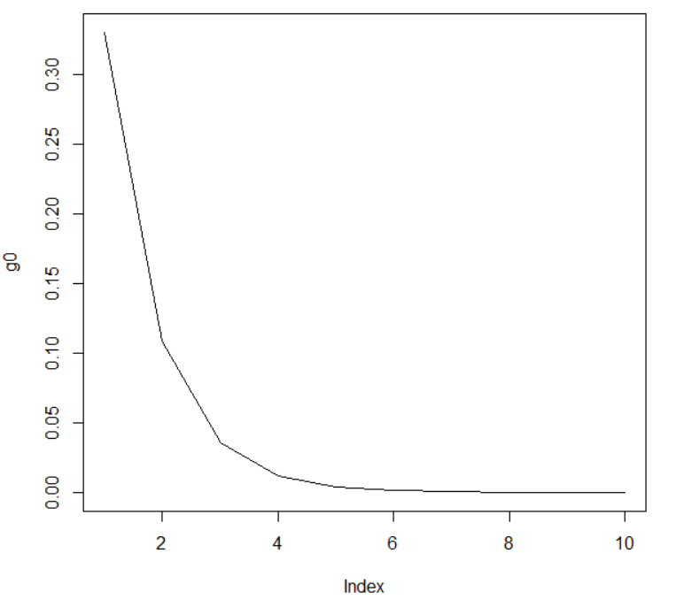
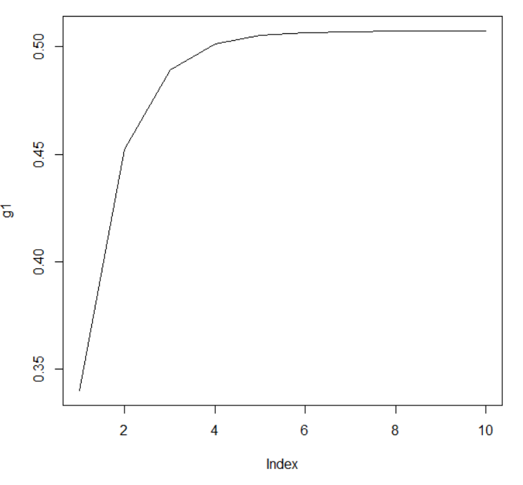
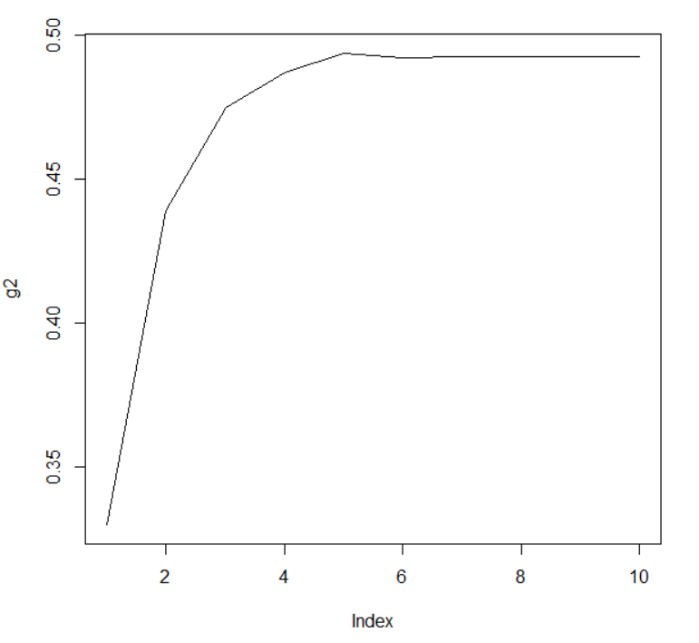
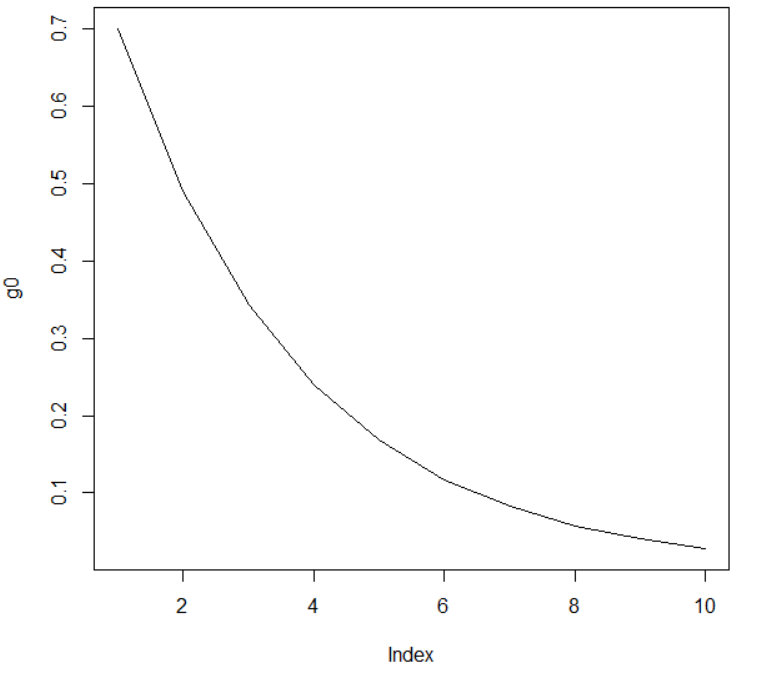
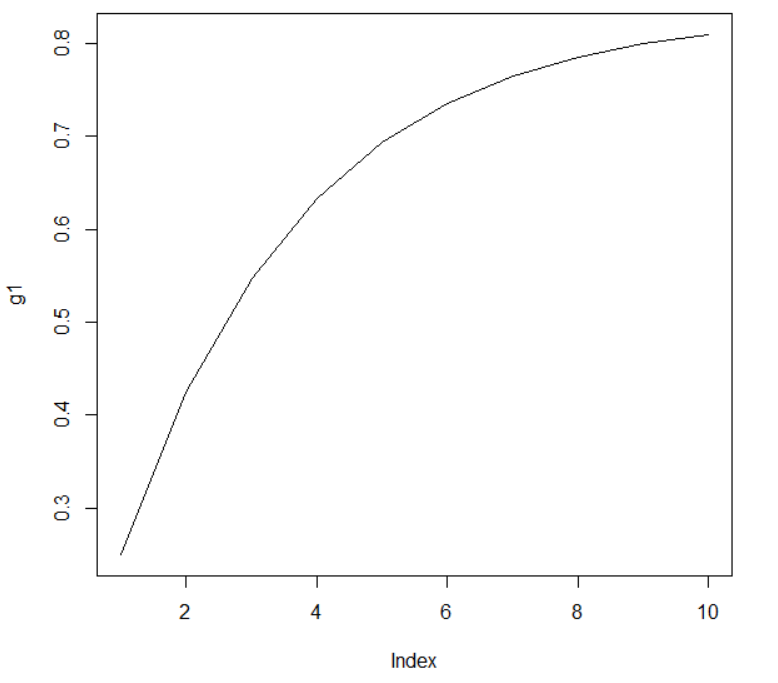
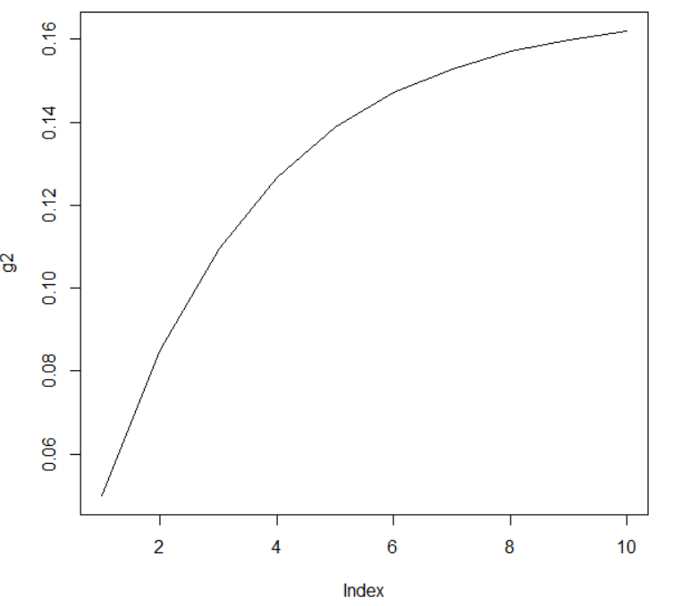

A Brief Introduction to Evolution Algebras
A Brief Introduction to Evolution Algebras
Remember Punnett Squares from high school biology? Punnett squares are a simple way of describing inheritance from parent to offspring. We use these to predict genotype(the genetics) and the phenotype(how an organism looks) based on looking at specific genes from parents.
$$ \begin{matrix} \hline & R & r \\ \hline W & Rw & Wr \\ \hline w & Rw & rw \\ \hline \end{matrix} $$
From these Punnett squares, we can make parallels to a monoid, which is similar to a group but without inverses. Using Punnett squares, you can combine alleles, which is our operation. We can make an identity element, which is not adding an element. That being said, associativity doesn't really exist in genetics. Instead, we have commutativity, where $rw = wr$, $Rw = wR$, etc.
Expanding on these ideas, we can make an evolution algebra, which are a set of algebras which are not associative in general but are commutative. Our binary operation will be referred to as multiplication, but is the same as our Punnett square operation.
Definition
An evolution algebra of dimension n(n $\in \mathbb{N}$) over a field $K$ is a K-algebra A provided with a Basis $B = ${ $e_i : 1 \leq i \leq n$ } such that $e_ie+j = 0$ whenever $i \neq j$. For a fixed basis $B$ in $A$, the scalars $a_ki \in K$ such that $e_i^2 = \sum_{k} a_{ki}e_k$ are called the structure constants of $A$ relative to $B$.
This is a pretty dense definition, but we'll focus on a few key parts to unpack:
What does $e_i * e_j = 0$ when $i \neq j$ mean in our genetics example? We are trying to model how one element, $e_i$, "produces" other elements in the set, modelled e_k. So, we don't care about interactions between $e_i$ and other elements in the set.
What is that "a" element? $a_{ki}$ is a real number that represents the probability of offspring genotypes resulting from self reproduction of type i.
What does the basis represent? The basis is a set of pure genetic types to track. Using our example from above, our basis would be ${e_1, e_2, e_3, e_4}$, which would encode R, r, W, and w. Once we pick a basis, we can represent any population is a linear combination of the basis and compute evolution over generations by repeatedly applying the multiplication.
Let's connect this to our example from above: Suppose we have two alleles W, w, R, r with basis elements $e_1, e_2, e_3, e_4$. Let's define an evolution algebra as:
$e_1^2 = 0.4e_1 + 0.2e_2 + 0.25e_3 + 0.15e_4$
$e_2^2 = 0.1e_1 + 0.7e_2 + 0.1 e_3 + 0.1 e_4.$
$e_3^2 = 0.25e_1 + 0.25e_2 + 0.25 e_3 + 0.25 e_4$
$e_4^2 = 0.05e_1 + 0.15e_2 + 0.4 e_3 + 0.4 e_4.$
The biological meaning of the first equation is if a population consists only of a genotype W (represented by $e_1$), then the next generation will have proportions 0.4 W, 0.2 w, 0.25 R and 0.15 r. Following this pattern, we can find the meanings of the other equations.
There are some key concepts in algebra that we can model with evolution algebras. Playing a little fast and loose with definitions, we can define a series of linear maps:
$$A_1 \xrightarrow{a_1} A_2 \xrightarrow{a_2} ... \xrightarrow{a_{n-1}} A_n$$
These maps will allow us to see the "birth" and "death" of features(genes) over scales(generations.)
This will refer to a series of linear maps denotes $a_i$ that bring $A_1$ to $A_n.$ In our example, this represents our genes over multiple generations.
Algebraic persistence tracks the persistence of features over scales. We can visualize this as looking at our population over time while we try to find underlying features that persist over time. In connection to our example, this would be the R gene persisting over time.
Algebraic transience refers to a property in topological analysis where features are unstable. For our example, this refers to a feature dying out quickly instead of staying.
Algebraic periodicity refers to features cycling over time. In our example, this would be the r gene coming back every 5 generations, or mapping across generations.
Biological Background
What you learn in most biology classes is called Mendelian genetics. This refers to inheritance patterns that follow a simple pattern of dominant and recessive traits. The name Mendelian Genetics follows from Gregor Mendel's experiment, where he was able to track inheritance through dichotomous results. Part of this experiment was observing pea flower color: when a white flowered and purple flowered pea plant reproduced, the offpring pea flower was always either white or purple. In reality, inheritance can be much more complicated. For example, some genes may exhibit incomplete dominance, where the offspring is a mix of two traits. In connection to our example, this could be red and white stripes. When we traits have non-dichotomous outcomes, they follow non-Mendelian genetics.
Let's now lay out our framework for our following example:
Organelles are intracellular structures with different functions within a cell. In our example, we will follow the reproduction of mitochondria. Mitochondria are organelles that fix energy in the cell, or make food into usable energy. Mitochondria are integral to cell function. They are also interesting because, unlike other organelles, their DNA is not in the nucleus of the cell. If we took all organelles out of a cell and somehow let it go through mitosis(or cell-splitting), the resulting cells would never have mitochondria, but would have other organelles. It would take a lot of energy, but the cell would be able to make everything else it needs.
So how do cells ensure that daughter cells have the mitochondria they need? When the cell is ready to go through mitosis, it triggers the mitochondria to split by themselves. In our cells, mitosis is a very tightly conserved process, where the daughter cells are identical to the parent cells because we have proofreading machinery that makes sure our cells make few mistakes when replicating.
However, mitochondria are a lot more simple than our cells and do not have the machinery to proofread like ours do. This results in more mutations, which we attempt to model with our equations.
Examples of using Evolution Algebras in Mitochondria
Let's go over some vocabulary for our example:
Allele: the letters in our gene(R, r, W, w)
Homoplasmic cells: Cells where all the alleles for a gene are the same(i.e, RR, WW, ww, rr)
Heteroplasmic cells: Cells where there are different alleles for a gene(i.e Rr, Wr, etc.)
Phenotypes: The way an organism looks (i.e Red, white)
Genotypes: The genetics of the organism (i.e Rw, Wr)
We will go through two examples.
Example 1
Our first is an example in which we have two gene types: homoplasmic and heteroplasmic.
Let $g_0$ denote the heteroplasmic mitochondria(i.e contain $g_0, g_1, g_2$) and $g_1, g_2$ denote homoplasmic types(i.e. only contain themselves.)
In biology, $g_0$ is called a transitory state, which will disappear after some cell generations. In comparison, $g_1 and g_2$ are stable states and are the same from generation to generation.
We can then make an evolution algebra to denote this:
$g_0^2 = \pi g_0 + \alpha g_1 + \beta g_2,$
$g_1^2 = g_1$
$g_2^2 = g_2$
Lets look at what these equations tell us:
When the $g_0$ mitochondria splits, it will carry $g_0, g_1$ and $g_2$ genes at rates of $\pi, \alpha, \beta$(where these rates can be calculated with combinatorics or a genetic model!)
When $g_1$ splits, it only carries $g_1$ genes, and the same follows for $g_2.$
Computer Simulation
We will do two simulations. First, us assume that $\pi = 0.33, \alpha = 0.34, \beta = 0.3$. Using Markov Chain simulation in R, we end up with these graphs over 10 generations:



These graphs show that $g_0$ approaches 0 by around 5 generations, and the same happens for $g_1$ and $g_2.$
Now, let us assume a much more dramatic probability distribution, where $\pi = 0.70, \alpha = 0.25, \beta = 0.05$. Using Markov Chain simulation in R, we end up with these graphs over 10 generations:



Within 10 generations, $g_0$ still approaches 0 relatively quickly.
Through these equations, we can go through different examples of what we can predict to happen. For example, what if $g_2$ dies out immediately? We would set $g_2^2 = 0.$ Also, if $g_2$ were to mutate back to $g_1$, we would set $g_2^2 = \mu g_1 + g_2^2$, where $\mu$ is nonzero.
These equations model what we expect to see in biological systems! While underlying biological mechanisms are unknown, these evolution algebras can help us understand them better.
Example 2
Let's go through another example: A number of human disorders occur from mutations with human mitochondrial DNA. These patients usually harbor a number of wild type mitochondrial genomes(wtmtDNA)(think: normal genomes), a population of specific partially deleted genome($\delta$ mtDNA), and a partial duplication DNA(dupmtDNA.)
From long term tissue culture samples, it has been found that we expect to see 80% dupmtDNA, 10% wtmtDNA, and 10% ∆-mtDNA.
Through this, we can define a series of equations:
Let:
$g_0$ denote a triplasmy of dupmtDNA, wtmtDNA, $\delta$ mtDNA,
$g_1$ denote a heteroplasmy of dupmtDNA and wtmtDNA,
$g_2$ denote a heteroplasmy of dupmtDNA, and $\delta$ mtDNA,
$g_3$ denote a heteroplasmy of wtmtDNA and $\delta$ mtDNA,
$g_4$ denote a homoplasmy of dupmtDNA,
$g_5$ denote a homoplasmy of wtmtDNA,
$g_6$ denote a homoplasmy of $\delta$ mtDNA.
This implies our following evolution algebra:
$g_0^2 = \beta_{00}g_0 + \beta_{01}g_1 + \beta{02}g_2 + \beta_{03}g_3,$
$g_1^2 = \beta_{14}g_4 + \beta_{15}g_5,$
$g_2^2 = \beta_{24}g_4 + \beta_{26}g_6, $
$g_3^2 = \beta_{35}g_5 + \beta_{36}g_6,$
$g_4^2 = \beta_{44}g_0 + \beta_{45}g_5 + \beta_{46}g_6,$
$g_5^2 = \beta_{54}g_4 + \beta_{56}g_6,$
$g_6^2 = \beta_{64}g_4 + \beta_{65}g_5,$
We can assign values to the $\beta$ values to observe genotype frequency over time. $\beta_{00} = \beta_{01} = \beta_{02} = \beta_{03} = \frac{1}{4}$
$\beta_{14} = \beta_{15} = \frac{1}{2}$
$\beta_{24} = \beta_{26} = \frac{1}{2}$
$\beta_{35} = \beta_{36} = \frac{1}{2}$
$\beta_{44} = \frac{5}{6}, \beta_{45} = \beta_{56} = \frac{1}{12}$
$\beta_{54} = \frac{2}{3}, \beta_{56} = \frac{1}{3}$
$\beta_{64} = \frac{2}{3}, \beta_{65} = \frac{1}{3}$
Computer Simulation
We will do one simulation. Using the above values, we will construct a Markov Chain in R. Using the Steady States function, we find that we end up with the expected proportions of 80% dupmtDNA, 10% wtmtDNA, and 10% $\delta$ mtDNA! Once again, we are able to model real life scenarios with our equations.
Why should I care about this?
This is a very good question! Why should we care about these equations and what they prove? In the earlier example, we modelled several types of DNA-damaged mitochondria. Suppose we have specific treatments for specific types of damaged mitochondria. That is, we have a treatment for dup-mtDNA that will not work for wtmt-DNA, etc. Being able to personalize treatments without invasive procedures could be critical to improving patient outcomes and letting them live fullfilling lives with minimal intervention. We could also use this with people with other chronic conditions, like HIV or chronic Hepatitis.